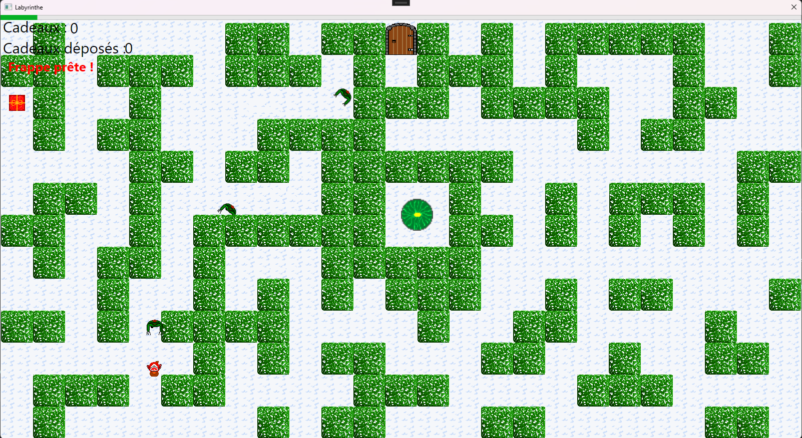
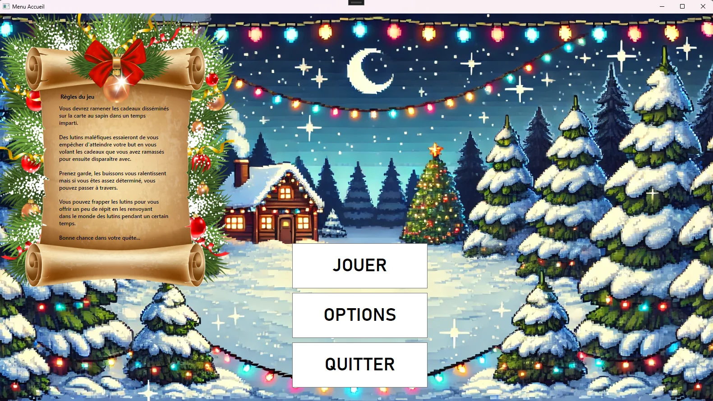
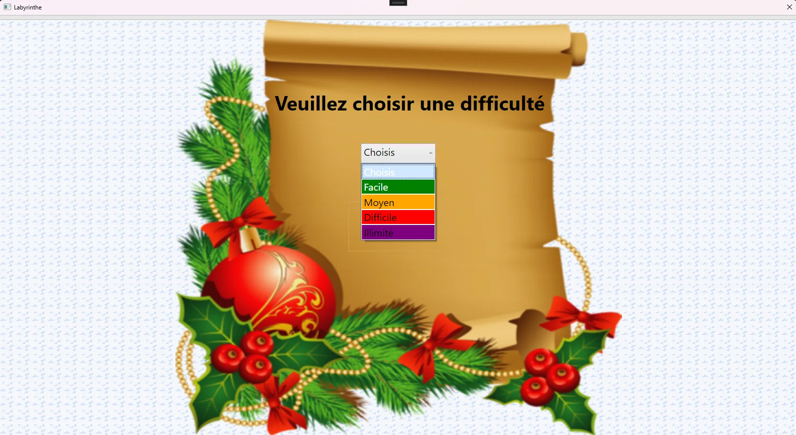
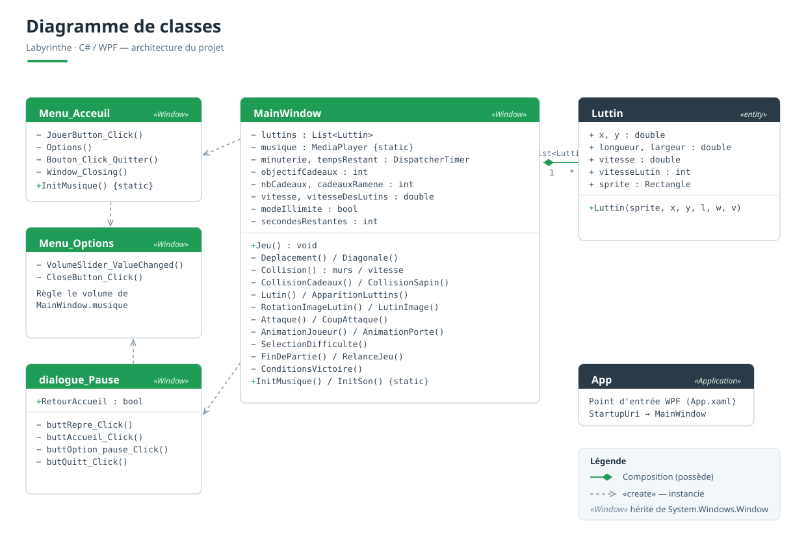

Boucle de jeu
Game loop
DispatcherTimer ~60 FPS pilotant déplacements, collisions et animations à chaque frame.
DispatcherTimer ~60 FPS driving movement, collisions and animations every frame.
Un jeu d'arcade 2D développé entièrement en C# et WPF : un Père Noël récolte des cadeaux et les rapporte au sapin avant la fin du temps, tout en évitant les lutins voleurs.
A 2D arcade game built entirely in C# and WPF: Santa collects gifts and brings them back to the tree before time runs out, while dodging gift-stealing elves.

Le Père Noël récolte les cadeaux disséminés dans le labyrinthe de buissons et les rapporte au sapin avant la fin du temps.
Santa collects the gifts scattered across the bush maze and brings them back to the tree before time runs out.

Écran d'accueil avec les règles du jeu et l'ambiance de Noël.
Home screen with the game rules and the Christmas atmosphere.

Quatre niveaux (Facile, Moyen, Difficile) plus un mode Illimité pour battre son record.
Four levels (Easy, Medium, Hard) plus an Endless mode to beat your high score.

Architecture du projet : MainWindow (moteur de jeu), l'entité Luttin et les fenêtres de menus.
Project architecture: MainWindow (game engine), the Luttin entity and the menu windows.
Concevoir un moteur de jeu temps réel sans moteur dédié, uniquement avec C# et le Canvas de WPF.
Build a real-time game engine without any dedicated engine, using only C# and the WPF Canvas.
Tout repose sur une boucle de jeu (DispatcherTimer ~60 images/s) qui orchestre déplacements, animations, collisions et apparition des ennemis à chaque frame.
Everything relies on a game loop (DispatcherTimer ~60 fps) orchestrating movement, animations, collisions and enemy spawning on every frame.
Le plus délicat : des collisions fiables (murs, cadeaux, sapin, zone d'attaque) et des lutins qui poursuivent le joueur tout en restant dans la carte.
The tricky part: reliable collisions (walls, gifts, tree, attack zone) and elves that chase the player while staying inside the map.
DispatcherTimer ~60 FPS pilotant déplacements, collisions et animations à chaque frame.
DispatcherTimer ~60 FPS driving movement, collisions and animations every frame.
Détection par hitbox (Rect.IntersectsWith) pour murs, cadeaux, sapin et attaque.
Hitbox detection (Rect.IntersectsWith) for walls, gifts, tree and attack.
Les lutins poursuivent le joueur, se réorientent et sont ralentis dans les buissons.
Elves chase the player, reorient themselves and slow down in the bushes.
Quatre niveaux (Facile à Difficile) plus un mode Illimité avec record de session.
Four levels (Easy to Hard) plus an Endless mode with a session high score.
Au-delà du jeu, ce projet m'a appris à structurer du code temps réel, à gérer des états (menus, pause, fin de partie) et à déboguer des comportements visuels image par image.
Beyond the game itself, this project taught me to structure real-time code, manage states (menus, pause, game over) and debug visual behavior frame by frame.